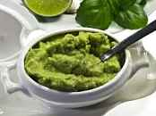

Guacamole
Home

What is a Guacamole
Guacamole is an avocado-based dip or spread that originated in Mexico.
It's typically made with mashed avocado and lime juice, then seasoned with salt and cilantro. Guacamole often contains tomatoes and onions
Ingredients
These are the ingredients you'll need to make this irresistible guacamole recipe:
- Avocados: Of course, you'll need avocados!
- Lime: Lime juice adds brightness and slows down the browning process.
- Salt: A teaspoon of salt enhances the flavors of the other ingredients.
- Vegetables: You'll also need an onion and roma tomatoes.
- Herbs and spices: Fresh cilantro, minced garlic, and cayenne pepper add tons of flavor.
Step by step:
- Mash avocados, lime juice, and salt together in a medium bowl; mix in tomatoes, onion, cilantro, and garlic. Stir in cayenne pepper.
- Serve immediately, or cover and refrigerate for 1 hour for improved flavor.